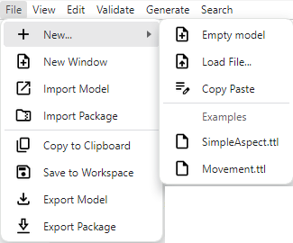
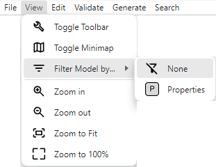
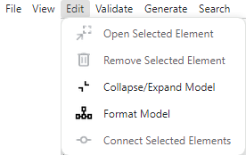
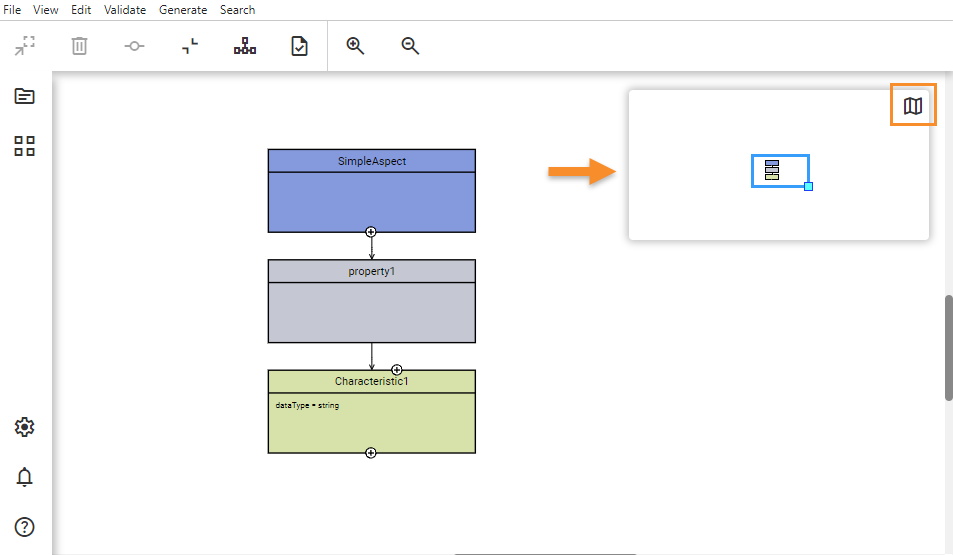

Aspect Model Editor UI overview
This section gives a brief overview of the UI and its features.
Menu
File Menu

| Icon | Name | Action |
|---|---|---|
|
New… |
Create, import, duplicate Aspect Models, or use a template. |
New Window |
Work on a different Aspect Model in a new window. |
|
Import Model |
Bring an existing Model into the current workspace. |
|
Import Package |
Add a packaged Model (ZIP) to the workspace. |
|
Copy to Clipboard |
Copy the current Model’s information for use elsewhere. |
|
|
Save to Workspace |
Store the current Model in the workspace for future use. |
Export Model |
Download the current Model as a TTL file. |
|
Export Package |
Download Model namespaces in a ZIP format. |
View Menu

| Icon | Name | Action |
|---|---|---|
Toggle Toolbar |
Switch the Toolbar on or off to better tailor your workspace environment, allowing you to focus on the aspects of the model that matter most to you. |
|
Toggle Minimap |
Show or hide the Minimap to enhance or simplify navigation within your model, enabling you to quickly move to different sections of your work. |
|
|
Filter Model by… |
Apply filters to the model based on none, Properties, or other criteria, simplifying your view to concentrate on specific elements or relationships. |
Zoom in |
Increase the level of detail you see in the model, allowing for closer examination of intricate parts or to fine-tune specific areas. |
|
Zoom out |
Broaden your view of the model to gain a better understanding of the overall structure and how individual components fit together. |
|
Zoom to Fit |
Adjust your perspective to encompass the entire model within your screen, ensuring you have a comprehensive overview of all elements at once. |
|
Zoom to 100% |
Reset your viewpoint to the model’s actual size, offering a standard scale for assessing dimensions and spatial relationships accurately. |
Edit Menu

| Icon | Name | Action |
|---|---|---|
Open Selected Element |
Launch the Edit dialog for the selected element, providing a direct path to modify its attributes or review its details. |
|
|
Remove Selected Element |
Delete the currently selected element from your model, streamlining your workspace by removing unnecessary or redundant components. |
Collapse/Expand Model |
Toggle the view of your model between collapsed and expanded states, aiding in focusing on specific sections or understanding the model’s overall structure. |
|
Format Model |
Automatically adjust the layout and appearance of your model, enhancing readability and maintaining consistent styling throughout. |
|
Connect Selected Elements |
Create a linkage between two selected elements, establishing a relationship or flow that reflects their interaction within the model. |
Toolbar
| Icon | Name | Action |
|---|---|---|
Open highlighted element |
Open the Edit dialog of the selected element (alternative: double-click an element inside the model). |
|
|
Delete |
Delete selected element(s). |
Collapse all/Expand all |
Expands/Collapses elements. |
|
Format |
Automatically format the Aspect Model. |
|
Connect |
Connect two selected elements. |
|
Validate |
Validate the Aspect Model. |
Workspace sidebar
The Workspace sidebar – see screenshot below – allows you to access namespaces (2) and to drag and drop elements to the graph area canvas (1).

Expand the Workspace sidebar to view the description of each element.
To add an element to your model drag and drop it on the graph area canvas, edit its details, and connect it with the rest of the graph.
For more information, see Edit models.
Bottom workspace sidebar
| Icon | Name | Action |
|---|---|---|
Open settings. Allows for defining the general configuration of the Aspect Model Editor, language settings, and namespace settings. To access the Settings dialog, click the Settings icon . For more information, see Settings. |
||
|
Open notifications. Shows the validation results for your Aspect Model. Further, you can find there info messages (e.g., Aspect Model was loaded) and warning messages (e.g., if elements cannot be connected to each other). To access the Notifications dialog, click the Notifications icon For more information, see Validation and notifications. |
|
|
Help |
Open documentation. |
Help
The help icon  opens a page which lists details about the application and provides
a link to the documentation.
opens a page which lists details about the application and provides
a link to the documentation.
Example:

Edit dialog
Edit the attributes of a selected element of your Aspect Model with the Edit dialog.
To access the details of an element in the Edit dialog, either double-click the element or select the element and click the Open element icon  on the toolbar.
on the toolbar.
For more information, see Edit elements.
Map
With the map, you can easily navigate your Aspect Model in the graph area canvas.
To toggle its visibility, click the Show/Hide map icon in the toolbar.

For more information, see Navigate models.